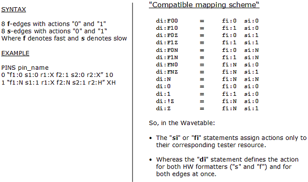

PS1600 timing and vector setup
The PS1600 card can have eight calibrated timing tri-state edges and, hence, uses the new edge definition syntax.
In this format, the edges for switching the normal driver level are denoted by fi (f for "fast"), the edges for creating the additional two levels by si (s for "slow"); these edge notations replace the former di notation. This is also the format that is used by the firmware command WFDS, WFDS? - (WaveForm Definition String). The only admitted action codes are 1, 0 and N.
The drive and tri-state edge syntax is summarized in the figure below.

There is no change for the receive edges (see Receive actions).
Drive edges are not subject to any edge ordering restrictions. However, there are restrictions for receive edges.
Example
The following shows a wavetable fragment for the PS1600 card for two pins.
WAVETBL "PS1600_INPUT_SE_wtb" # This starts a wavetable definition MODECONTEXT "INPUT" PINS P1 P3 0 "f1:0 s1:0 f2:0 s2:0" 00 1 "f1:1 s1:0 f2:1 s2:0" 11 2 "f1:0 s1:0 f2:1 s2:0" 01 3 "f1:1 s1:0 f2:0 s2:0" 10 4 "f1:1 s1:1 f2:1 s2:1" ZZ 5 "f1:0 s1:1 f2:0 s2:1" oo 6 "f1:1 s1:1 f2:1 s2:1" ii 7 "f1:0 s1:1 f2:1 s2:1" oi 8 "f1:1 s1:1 f2:0 s2:1" io WAVETBL "PS1600_OUTPUT_SE_wtb" # This starts a wavetable definition MODECONTEXT "OUTPUT" PINS P1 P3 0 "r1:L r2:L" LL 1 "r1:L r2:H" LH 2 "r1:H r2:L" HL 3 "r1:H r2:H" HH 4 "r1:X r2:X" XX
Functional changes
- Introduced in SmarTest 7.1.0
- SmarTest 7.3.2: Support of PS1600B